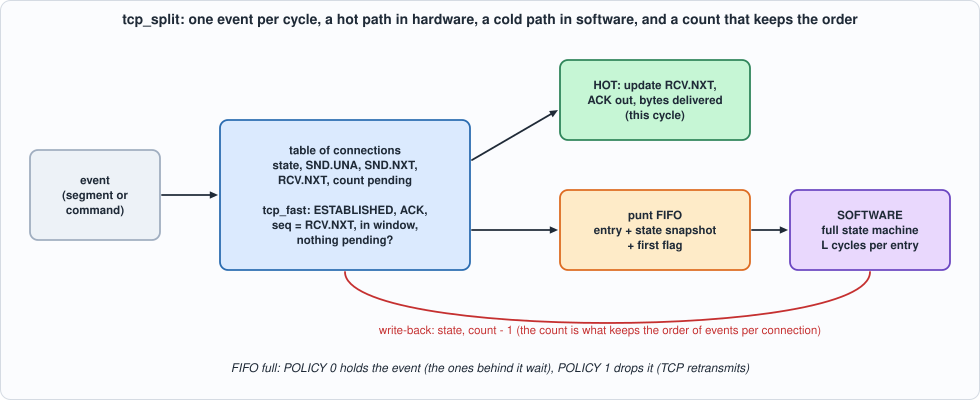
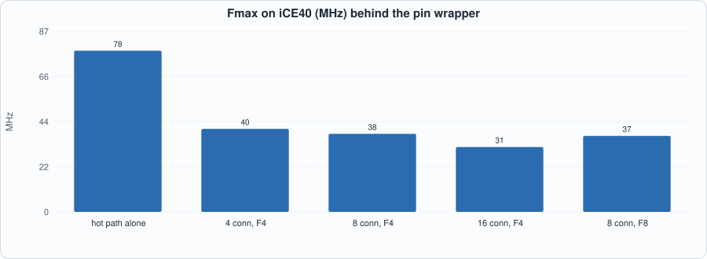
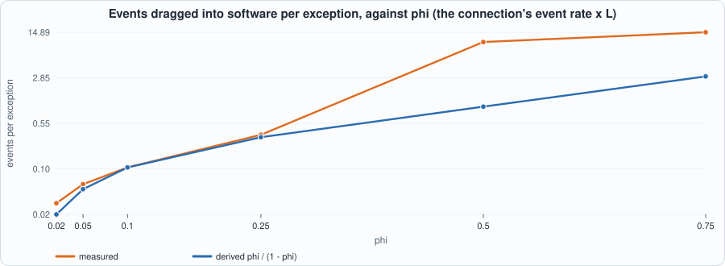
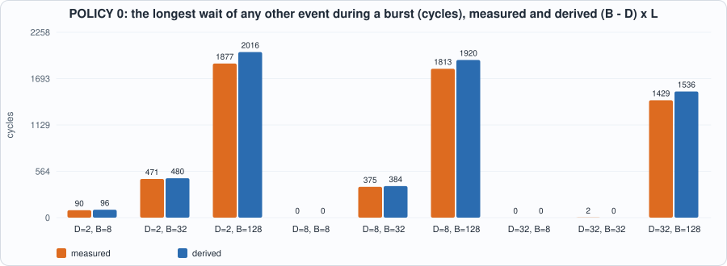

15. Hot Path and Cold Path: Splitting TCP Between Hardware and Software, Keeping the Order, Head-of-Line Blocking, and Reconnects¶
About the kestrels in this picture
- American kestrel (Falco sparverius) is the smallest falcon in North America and is found from Alaska to South America. The sexes differ in plumage: males have blue-grey wings, females are barred rufous. It hunts insects and small vertebrates from perches and by hovering.
- Nankeen kestrel (Falco cenchroides) is found across Australia and nearby islands. It hovers over open country and grassland, and often hunts along roadsides and fields.
The scene is imaginary and the birds are stylised drawings.
What you will see: the hot-path test of Chapter 12 (tcp_fast) turned into a working dispatcher. Almost every segment of an established connection is an in-order data segment or a pure ACK; the dispatcher handles those in one cycle and sends everything else, together with a snapshot of the connection, to software, which runs the full state machine and writes the new state back. The difficulty is not the fast path; it is keeping the order of events per connection while software is slow, and the chapter measures what that costs: how many perfectly ordinary segments end up in software only because an earlier one is pending, how long other connections wait when the queue to software is full (head-of-line blocking), and how long a reconnect takes when software is busy. The central claim, transparency (the split behaves exactly like the single state machine, whatever the timing of the software), is tested over many streams and timings, and the RTL is compared with the cycle model after every clock edge.
What you need to know first: Chapter 12 (the state machine and tcp_fast) and Chapter 14 (why an end-to-end property is a good test, and why it is not enough alone).
What this chapter builds: rtl/split.sv (tcp_split and the pin wrapper tcp_split_syn), model/split_gold.py (the cycle model of the dispatcher, a software model, the transparency check, the stimulus files), tb/split_tb.sv, and tools/ch15_run.py, tools/ch15_example_a.py, tools/ch15_example_b.py, tools/mut_ch15.py, tools/make_figs_ch15.py.
Scope: what this chapter leaves out, on purpose
Software is a model, not a processor: it takes one punted entry at a time, spends a fixed or random number of cycles on it (L), and writes the result back; there is no bus, no interrupt, no driver. One data direction: the machine of Chapter 12 sends no data, so Chapter 13's sender is not joined to it (Exercise 1). No timers: the 2MSL timeout and the retransmission timer reach the machine as ordinary events from the application side. The table is registers, one event per cycle, for up to 64 connections; a RAM with a bypass (Chapter 12's table) is Exercise 2. The segments software sends are recorded and compared, not put on a wire. The loads of Example B are generated, not captured.
The split¶

Figure 15.1: one event per cycle; the hot path in hardware, the cold path in software, a count that keeps the order.For each of 2^CIDW connections the dispatcher keeps the state variables of Chapter 12 and a count of events that software still owes the connection. One event arrives per cycle (a segment or an application command), and the rule is:
- a segment for a connection whose count is zero that
tcp_fastaccepts (ESTABLISHED, plain ACK,seq = RCV.NXT, length within the window, ACK number within[SND.UNA, SND.NXT]) is hot:RCV.NXTadvances, the ACK is produced, the bytes are delivered, in this cycle; - anything else is punted: it is pushed into a FIFO with a snapshot of the connection (state, passive flag,
SND.UNA,SND.NXT,RCV.NXT) and a flagfirst(the count was zero), and the connection's count goes up. That includes every application command, every segment the hot path does not take, and every event, however ordinary, of a connection whose count is not zero: if the hot path took it, the connection's events would be processed out of order; - software pops the FIFO, loads the snapshot if
firstis set (the hardware's state is current only when nothing was pending), runs the full state machine, and writes the new state back; the write-back is what decrements the count; - if the FIFO is full and the event must be punted: POLICY 0 holds it, so that the events behind it wait, whatever their connection (head-of-line blocking); POLICY 1 drops it and TCP's retransmission has to supply it again.
The behaviour is model/split_gold.py, cycle for cycle: Dispatcher.step is what one clock edge does, given the event offered, the pop and the write-back (inputs sampled before the edge; the result is registered).
#!/usr/bin/env python3
"""Chapter 15: the specification of the hot path / cold path split of TCP, cycle for cycle. Two parts:
Dispatcher: what tcp_split.sv does in one clock edge, given the event offered, the pop of the punt FIFO and the write-back from software (inputs sampled BEFORE the edge; outputs are registered, so the result of the event consumed at edge t is seen before edge t + 1).
Software: the cold path. It pops punt entries one at a time (a new one every `svc` cycles), runs the full state machine of Chapter 12 (tcp_gold.TCB) on them, and writes the new state back `lat` cycles after the pop. A connection's state is loaded from the entry's snapshot when `first` is set (nothing was pending, so the hardware's state is current) and kept in software while events are pending.
The claim the chapter tests is TRANSPARENCY: whatever the timing of the software, the segments sent and the bytes delivered per connection, and the state at the end, are exactly those of the single state machine fed the same events in the same order (the events the dispatcher consumed: with POLICY 1 some are dropped). `reference_check` computes that comparison.
Event types and flags are those of tcp_gold: E_SEG = 5 is the only event the hot path can take."""
import os, random, sys
from collections import deque
sys.path.insert(0, os.path.dirname(os.path.abspath(__file__)))
import tcp_gold as G
M = 0xFFFFFFFF
class Dispatcher:
def __init__(self, ncid, depth, policy):
self.n, self.depth, self.policy = ncid, depth, policy
self.tcb = [G.TCB() for _ in range(ncid)]; self.cnt = [0] * ncid; self.fifo = deque(); self.reg = None # reg: the registered result of the last consumed event
def head(self): return self.fifo[0] if self.fifo else None
def ready(self, ev):
if ev is None or self.policy != 0: return True
return not (self._punt(ev) and len(self.fifo) == self.depth)
def _hot(self, ev):
t = self.tcb[ev["cid"]]
return ev["e"] == G.E_SEG and self.cnt[ev["cid"]] == 0 and G.fast_path(t, ev.get("f", 0), ev.get("seq", 0) & M, ev.get("ack", 0) & M, ev.get("ln", 0), ev.get("wnd", 0))
def _punt(self, ev): return not self._hot(ev)
def step(self, ev, pop, wb):
"""-> (consumed, registered result of this edge or None). ev: dict or None; pop: bool; wb: dict(cid, st, pas, una, nxt, rcv) or None."""
res = None; consumed = ev is not None and self.ready(ev); pushed = False; popped = bool(pop and self.fifo)
if consumed:
c = ev["cid"]; t = self.tcb[c]
if self._hot(ev):
tx, dlv = t.event(G.E_SEG, ev.get("f", 0), ev.get("seq", 0), ev.get("ack", 0), ev.get("ln", 0), ev.get("wnd", 0)); res = (c, 0, tx, dlv)
elif len(self.fifo) == self.depth: res = (c, 2, None, 0)
else:
snap = (t.state, t.passive, t.una, t.nxt, t.rcv); self.fifo.append(dict(ev, snap=snap, first=1 if self.cnt[c] == 0 else 0)); pushed = True; res = (c, 1, None, 0)
if popped: self.fifo.popleft()
if pushed: self.cnt[ev["cid"]] += 1
if wb:
t = self.tcb[wb["cid"]]; t.state, t.passive, t.una, t.nxt, t.rcv = wb["st"], wb["pas"], wb["una"], wb["nxt"], wb["rcv"]; self.cnt[wb["cid"]] -= 1
return consumed, res
class Software:
def __init__(self, lat=8, svc=None, rng=None):
self.lat, self.svc, self.rng = lat, lat if svc is None else svc, rng or random.Random(0)
self.tcb = {}; self.free_at = 0; self.wbq = deque(); self.last_wb = -1; self.tx = []; self.tags = [] # tx: (time, cid, segment or None, delivered)
def _n(self, v): return v(self.rng) if callable(v) else v
def act(self, t, head):
"""Called once per cycle with the entry at the head of the FIFO (or None): -> pop? ; and the write-back due this cycle (or None)."""
pop = False
if head is not None and t >= self.free_at:
pop = True; c = head["cid"]; tcb = self.tcb.setdefault(c, G.TCB())
if head["first"]: tcb.state, tcb.passive, tcb.una, tcb.nxt, tcb.rcv = head["snap"]
tx, dlv = tcb.event(head["e"], head.get("f", 0), head.get("seq", 0), head.get("ack", 0), head.get("ln", 0), head.get("wnd", 0), head.get("iss", 0))
due = max(t + self._n(self.lat), self.last_wb + 1); self.last_wb = due; self.free_at = t + self._n(self.svc)
self.wbq.append((due, dict(cid=c, st=tcb.state, pas=tcb.passive, una=tcb.una, nxt=tcb.nxt, rcv=tcb.rcv), tx, dlv, head.get("tag")))
wb = None
if self.wbq and self.wbq[0][0] <= t:
due, wb, tx, dlv, tag = self.wbq.popleft(); self.tx.append((t, wb["cid"], tx, dlv)); self.tags.append((t, wb["cid"], tag, wb["st"]))
return pop, wb
def run(events, ncid, depth, policy, lat=8, svc=None, gaps=None, seed=1, record=False, maxcycles=2000000, arrivals=None, spurious=0.0):
"""Closed loop: events (dicts with cid) arrive in order, the i-th no earlier than cycle arrival[i] (cumulative `gaps`, default back to back); the dispatcher and the software run until everything is consumed and written back. -> dict with the per-cycle trace (if record), the statistics, the hot/software outputs."""
rng = random.Random(seed); d = Dispatcher(ncid, depth, policy); sw = Software(lat, svc, random.Random(seed + 1)); n = len(events)
arr = []; tt = 0
for i in range(n): tt += (gaps[i] if gaps else 0); arr.append(tt)
if arrivals is not None: arr = list(arrivals)
qi = 0; t = 0; hot_tx = []; trace = []; consumed_evs = []; path = []; ctime = [None] * n; max_fifo = 0; stall_cycles = 0; ref = {}; collateral = 0; dropped = 0; idx = [None] * n; done_at = None
while t < maxcycles:
ev = events[qi] if qi < n and arr[qi] <= t else None
head = d.head(); pop, wb = sw.act(t, head)
if head is None and spurious and rng.random() < spurious: pop = True # software pops an empty FIFO: ignored
ready = d.ready(ev); consumed, res = d.step(ev, pop, wb)
if record: trace.append(dict(t=t, ev=ev, ready=ready, pop=pop, wb=wb, head=head, res=res))
d.reg = res
if ev is not None and not consumed: stall_cycles += 1
if consumed:
ctime[qi] = t; c, p, tx, dlv = res; path.append(p)
if p == 2: dropped += 1
else:
r = ref.setdefault(ev["cid"], G.TCB())
if ev["e"] == G.E_SEG and p == 1 and G.fast_path(r, ev.get("f", 0), ev.get("seq", 0) & M, ev.get("ack", 0) & M, ev.get("ln", 0), ev.get("wnd", 0)): collateral += 1
consumed_evs.append(ev); r.event(ev["e"], ev.get("f", 0), ev.get("seq", 0), ev.get("ack", 0), ev.get("ln", 0), ev.get("wnd", 0), ev.get("iss", 0))
if p == 0: hot_tx.append((t, ev["cid"], tx, dlv))
qi += 1
max_fifo = max(max_fifo, len(d.fifo))
t += 1
if qi == n and not d.fifo and not sw.wbq and all(c == 0 for c in d.cnt) and d.reg is None: break
return dict(maxc=maxcycles, policy=policy, trace=trace, cycles=t, arr=arr, ctime=ctime, path=path, dropped=dropped, collateral=collateral, max_fifo=max_fifo, stall=stall_cycles, hot_tx=hot_tx, sw_tx=sw.tx, consumed=consumed_evs, disp=d, sw=sw, n=n)
def reference_check(r):
"""Transparency: -> None if the dispatcher and the software together equal the single state machine on the consumed events, else a description."""
if r["cycles"] >= r["maxc"]: return "the run did not finish"
if r["policy"] == 0 and r["dropped"]: return "POLICY 0 dropped an event"
refs = {}; exp = {}
for ev in r["consumed"]:
c = ev["cid"]; t = refs.setdefault(c, G.TCB()); tx, dlv = t.event(ev["e"], ev.get("f", 0), ev.get("seq", 0), ev.get("ack", 0), ev.get("ln", 0), ev.get("wnd", 0), ev.get("iss", 0))
if tx is not None or dlv: exp.setdefault(c, []).append((tx, dlv))
got = {}
for (t, c, tx, dlv) in sorted(r["hot_tx"] + r["sw_tx"], key=lambda x: x[0]):
if tx is not None or dlv: got.setdefault(c, []).append((tx, dlv))
for c in set(exp) | set(got):
if exp.get(c, []) != got.get(c, []): return f"connection {c}: the segments sent or the bytes delivered differ"
d = r["disp"]
for c, t in refs.items():
if (d.tcb[c].state, d.tcb[c].passive, d.tcb[c].una, d.tcb[c].nxt, d.tcb[c].rcv) != t.snapshot(): return f"connection {c}: the final state differs"
return None
def with_decoys(events, ncid):
"""Application commands (OPEN, CLOSE, ABORT, TIMEOUT) carry the segment fields of a segment the hot path WOULD take, so that a design that fails to look at the event type takes them for segments."""
ref = [G.TCB() for _ in range(ncid)]; out = []
for ev in events:
t = ref[ev["cid"]]; v = dict(ev)
if v["e"] != G.E_SEG: v.update(f=G.ACK, seq=t.rcv, ack=t.nxt, ln=0, wnd=65535)
out.append(v); t.event(v["e"], v.get("f", 0), v.get("seq", 0), v.get("ack", 0), v.get("ln", 0), v.get("wnd", 0), v.get("iss", 0))
return out
def battery():
"""The model's own test, as one function: transparency over streams, timings, depths and both policies. -> None or a description of the first failure."""
for kind in ("realistic", "random", "directed"):
for policy, lat, depth in ((0, 1, 4), (0, 8, 2), (0, 30, 8), (1, 8, 4), (1, 3, 2)):
for seed in range(2):
if kind == "realistic": ev = with_decoys(G.realistic_events(seed, conns=4, per_conn=25, p_odd=0.06), 4)
elif kind == "random": ev = G.gen_events(seed, 250, cids=4)
else: ev = with_decoys(G.directed_events(0) + G.gen_events(seed, 60, cids=4), 4)
rg = random.Random(seed); gaps = [rg.randint(0, 3) for _ in ev]
try: r = run(ev, 4, depth, policy, lat=lat, gaps=gaps, seed=seed, maxcycles=60000); d = reference_check(r)
except Exception as x: return f"{kind}, policy {policy}, latency {lat}: crash {type(x).__name__}"
if d: return f"{kind}, policy {policy}, latency {lat}, depth {depth}: {d}"
# a passive connection left alone in SYN_RCVD (nothing pending), then reset: the state written back and the snapshot taken again must round-trip, passive flag included, or the reset closes it instead of returning it to LISTEN
for lat in (1, 6):
ev = [dict(cid=0, e=G.E_OPEN_P, iss=100), dict(cid=0, e=G.E_SEG, f=G.SYN, seq=500, ack=0, wnd=1000), dict(cid=0, e=G.E_SEG, f=G.RST, seq=501, ack=0, wnd=1000), dict(cid=0, e=G.E_SEG, f=G.SYN, seq=900, ack=0, wnd=1000)]
r = run(ev, 1, 4, 0, lat=lat, gaps=[0, 60, 60, 60], maxcycles=60000); d = reference_check(r)
if d or r["disp"].tcb[0].state != G.SYN_RCVD: return f"passive reset scenario, latency {lat}: {d or 'not back in LISTEN'}"
return None
# ---------------------------------------------------------------- stimulus for the RTL
def pack_entry(e, cidw):
snap = e["snap"]; v = 0
for val, w in ((e["cid"], cidw), (e["e"], 3), (e.get("f", 0), 4), (e.get("seq", 0) & M, 32), (e.get("ack", 0) & M, 32), (e.get("ln", 0), 16), (e.get("wnd", 0), 16), (e.get("iss", 0) & M, 32), (snap[0], 4), (snap[1], 1), (snap[2], 32), (snap[3], 32), (snap[4], 32), (e["first"], 1)): v = (v << w) | (val & ((1 << w) - 1))
return v
def pw(cidw): return cidw + 3 + 4 + 32 + 32 + 16 + 16 + 32 + 4 + 1 + 96 + 1
def write_stim(path, r, cidw, seed=1):
"""One line per cycle: ev_valid(1) cid(2) type(1) f(1) seq(8) ack(8) ln(4) wnd(4) iss(8) | pop(1) | wb_valid(1) wb_cid(2) st(1) pas(1) una(8) nxt(8) rcv(8) hex digits; junk where valid = 0."""
rng = random.Random(seed)
with open(path, "w") as f:
for row in r["trace"]:
ev, wb = row["ev"], row["wb"]
if ev: a = "%x%02x%x%x%08x%08x%04x%04x%08x" % (1, ev["cid"], ev["e"], ev.get("f", 0), ev.get("seq", 0) & M, ev.get("ack", 0) & M, ev.get("ln", 0), ev.get("wnd", 0), ev.get("iss", 0) & M)
else: a = "%x%02x%x%x%08x%08x%04x%04x%08x" % (0, rng.getrandbits(cidw) if cidw else 0, rng.getrandbits(3), rng.getrandbits(4), rng.getrandbits(32), rng.getrandbits(32), rng.getrandbits(16), rng.getrandbits(16), rng.getrandbits(32))
b = "%x" % (1 if row["pop"] else 0)
if wb: c = "%x%02x%x%x%08x%08x%08x" % (1, wb["cid"], wb["st"], wb["pas"], wb["una"], wb["nxt"], wb["rcv"])
else: c = "%x%02x%x%x%08x%08x%08x" % (0, rng.getrandbits(cidw), rng.getrandbits(4), rng.getrandbits(1), rng.getrandbits(32), rng.getrandbits(32), rng.getrandbits(32))
f.write(a + b + c + "\n")
return len(r["trace"])
def expected_rows(r, cidw):
"""The tb prints, before every edge: C ready r_valid r_cid r_path txv txf txseq txack dlv pq_valid pq_data(hex). The registered result is that of the previous edge."""
rows = []; prev = None; digits = (pw(cidw) + 3) // 4
for row in r["trace"]:
if prev is None: rv = (0, 0, 0, 0, 0, 0, 0, 0)
else:
c, p, tx, dlv = prev; rv = (1, c, p, 1 if tx else 0, tx[0] if tx else 0, tx[1] if tx else 0, tx[2] if tx else 0, dlv)
h = row["head"]; hv = ("%0*x" % (digits, pack_entry(h, cidw))) if h else "-"
rows.append((1 if row["ready"] else 0,) + rv + (1 if h else 0, hv))
prev = row["res"]
return rows
if __name__ == "__main__":
# hand-checked: a connection established through software, then data on the hot path, then an oddity that goes to software and holds the events behind it
ev = [dict(cid=0, e=G.E_OPEN_P, iss=100), dict(cid=0, e=G.E_SEG, f=G.SYN, seq=500, ack=0, wnd=1000), dict(cid=0, e=G.E_SEG, f=G.ACK, seq=501, ack=101, wnd=1000)]
for i in range(5): ev.append(dict(cid=0, e=G.E_SEG, f=G.ACK, seq=501 + 100 * i, ack=101, ln=100, wnd=1000))
r = run(ev, 1, 4, 0, lat=6); assert reference_check(r) is None
assert r["path"][:3] == [1, 1, 1] and r["path"][3] == 1 # the handshake is software's; the first data segment arrives while the third step is still pending: punted with it
r2 = run(ev, 1, 4, 0, lat=1); assert reference_check(r2) is None
ev2 = ev[:3] + [dict(cid=0, e=G.E_SEG, f=G.ACK, seq=501, ack=101, ln=100, wnd=1000)] * 2
gaps = [0, 0, 0, 40, 40]; r3 = run(ev2, 1, 4, 0, lat=6, gaps=gaps); assert r3["path"][3] == 0 and reference_check(r3) is None # with time between them the data segment is hot
ev4 = [dict(cid=0, e=G.E_OPEN_P, iss=100), dict(cid=0, e=G.E_SEG, f=G.SYN, seq=500, ack=0, wnd=1000), dict(cid=0, e=G.E_SEG, f=G.RST, seq=501, ack=0, wnd=1000)]
r4 = run(ev4, 1, 4, 0, lat=6, gaps=[0, 60, 60]); assert reference_check(r4) is None and r4["disp"].tcb[0].state == G.LISTEN # reset of a passive SYN_RCVD returns to LISTEN: the passive flag survives the write-back
print("split_gold hand-checked scenarios passed")
The hardware¶
// verilator lint_off DECLFILENAME
// Chapter 15: the hot path and the cold path of TCP. tcp_split keeps, for each of 2^CIDW connections, the state variables of Chapter 12 and a count of the events that software still owes it. Each cycle at most one event arrives:
// * a SEGMENT for a connection with nothing pending that tcp_fast (Chapter 12) accepts is handled HERE, in this cycle: SND.UNA and RCV.NXT are updated, the ACK is produced, the bytes are delivered;
// * anything else (an application command, a segment the hot path does not take, or ANY event for a connection that already has events pending) is PUNTED to software: it enters a FIFO together with a snapshot of the connection's state and a flag `first` (nothing was pending, so software must load the snapshot);
// * software pops the FIFO (pq_valid / pq_data / pq_pop), runs the full state machine, and WRITES BACK the new state (wb_*); the write-back is what decrements the count. While the count is not zero every event of the connection goes to software, so the order of events per connection is the order of arrival.
// If the FIFO is full and the event must be punted: POLICY 0 holds it (ev_ready = 0: the events behind it wait, whatever their connection: head-of-line blocking), POLICY 1 drops it (path 2; TCP's retransmission must recover).
// One event per cycle, one write-back per cycle, results registered. The table is registers (CIDW <= 6), read and written in the same cycle. The behaviour is that of model/split_gold.py, cycle for cycle.
module tcp_split #(parameter int CIDW = 3, parameter int DEPTH = 4, parameter int POLICY = 0, localparam int PW = CIDW + 3 + 4 + 32 + 32 + 16 + 16 + 32 + 4 + 1 + 96 + 1) (
input logic clk, input logic rst,
input logic ev_valid, input logic [CIDW-1:0] ev_cid, input logic [2:0] ev_type, input logic [3:0] ev_f, input logic [31:0] ev_seq, input logic [31:0] ev_ack, input logic [15:0] ev_ln, input logic [15:0] ev_wnd, input logic [31:0] ev_iss,
output logic ev_ready,
output logic r_valid, output logic [CIDW-1:0] r_cid, output logic [1:0] r_path, output logic r_txv, output logic [3:0] r_txf, output logic [31:0] r_txseq, output logic [31:0] r_txack, output logic [15:0] r_dlv,
output logic pq_valid, output logic [PW-1:0] pq_data, input logic pq_pop,
input logic wb_valid, input logic [CIDW-1:0] wb_cid, input logic [3:0] wb_st, input logic wb_pas, input logic [31:0] wb_una, input logic [31:0] wb_nxt, input logic [31:0] wb_rcv);
localparam int N = 1 << CIDW;
// an entry: cid, type, f, seq, ack, ln, wnd, iss, state, passive, una, nxt, rcv, first
localparam int PTRW = $clog2(DEPTH), CNTW = $clog2(DEPTH + 1);
logic [3:0] t_st [N]; logic t_pas [N]; logic [31:0] t_una [N]; logic [31:0] t_nxt [N]; logic [31:0] t_rcv [N]; logic [3:0] t_cnt [N];
logic [PW-1:0] mem [DEPTH]; logic [CNTW-1:0] count; logic [PTRW-1:0] rd, wr;
logic [3:0] st, cnt; logic pas; logic [31:0] una, nxt, rcv; logic hit_raw, hot, punt, full, consumed, pushed, drop, tx_v_i; logic [31:0] n_una_f, n_rcv_f; logic [15:0] dlv_f; logic txv_f;
tcp_fast fast (.st(st), .una(una), .nxt(nxt), .rcv(rcv), .f(ev_f), .seq(ev_seq), .ack(ev_ack), .ln(ev_ln), .wnd(ev_wnd), .hit(hit_raw), .n_una(n_una_f), .n_rcv(n_rcv_f), .tx_v(txv_f), .dlv(dlv_f));
always_comb begin
st = t_st[ev_cid]; pas = t_pas[ev_cid]; una = t_una[ev_cid]; nxt = t_nxt[ev_cid]; rcv = t_rcv[ev_cid]; cnt = t_cnt[ev_cid];
full = (count == CNTW'(DEPTH));
hot = ev_valid && (ev_type == 3'd5) && (cnt == 4'd0) && hit_raw;
punt = ev_valid && !hot;
ev_ready = (POLICY == 0) ? !(punt && full) : 1'b1;
consumed = ev_valid && ev_ready;
pushed = consumed && punt && !full;
drop = consumed && punt && full;
tx_v_i = txv_f;
pq_valid = (count != '0); pq_data = mem[rd];
end
logic [PW-1:0] entry;
always_comb entry = {ev_cid, ev_type, ev_f, ev_seq, ev_ack, ev_ln, ev_wnd, ev_iss, st, pas, una, nxt, rcv, (cnt == 4'd0)};
logic pop_ok; always_comb pop_ok = pq_pop && pq_valid;
always_ff @(posedge clk) begin
r_valid <= 1'b0; r_cid <= ev_cid; r_path <= 2'd0; r_txv <= 1'b0; r_txf <= 4'd0; r_txseq <= 32'd0; r_txack <= 32'd0; r_dlv <= 16'd0;
if (rst) begin
count <= '0; rd <= '0; wr <= '0;
for (int i = 0; i < N; i++) begin t_st[i] <= 4'd0; t_pas[i] <= 1'b0; t_una[i] <= 32'd0; t_nxt[i] <= 32'd0; t_rcv[i] <= 32'd0; t_cnt[i] <= 4'd0; end
end else begin
r_valid <= consumed;
if (consumed) begin
r_path <= hot ? 2'd0 : (drop ? 2'd2 : 2'd1);
if (hot) begin r_txv <= tx_v_i; r_txf <= tx_v_i ? 4'd2 : 4'd0; r_txseq <= tx_v_i ? nxt : 32'd0; r_txack <= tx_v_i ? n_rcv_f : 32'd0; r_dlv <= dlv_f; end
end
if (hot) t_rcv[ev_cid] <= n_rcv_f; // only RCV.NXT moves: in ESTABLISHED the machine of Chapter 12 has SND.UNA = SND.NXT (it sends no data), so the ACK number tcp_fast would store is the one already there
if (pushed) begin mem[wr] <= entry; wr <= (wr == PTRW'(DEPTH - 1)) ? '0 : wr + PTRW'(1); t_cnt[ev_cid] <= cnt + 4'd1; end
if (pop_ok) rd <= (rd == PTRW'(DEPTH - 1)) ? '0 : rd + PTRW'(1);
count <= count + CNTW'(pushed) - CNTW'(pop_ok);
if (wb_valid) begin
t_st[wb_cid] <= wb_st; t_pas[wb_cid] <= wb_pas; t_una[wb_cid] <= wb_una; t_nxt[wb_cid] <= wb_nxt; t_rcv[wb_cid] <= wb_rcv;
t_cnt[wb_cid] <= t_cnt[wb_cid] - 4'd1 + ((pushed && ev_cid == wb_cid) ? 4'd1 : 4'd0);
end
end
end
endmodule
// tcp_split_syn: the same design behind a handful of pins, ONLY so that it fits a chip for the place-and-route runs: the inputs are shifted in serially, the outputs are folded into one registered 16-bit word.
module tcp_split_syn #(parameter int CIDW = 3, parameter int DEPTH = 4, parameter int POLICY = 0) (input logic clk, input logic rst, input logic si, input logic sh, output logic [15:0] info);
localparam int PW = CIDW + 3 + 4 + 32 + 32 + 16 + 16 + 32 + 4 + 1 + 96 + 1;
logic [CIDW+3+4+32+32+16+16+32+1+1+CIDW+4+1+96+1-1:0] iv; logic ev_ready, r_valid, r_txv, pq_valid; logic [CIDW-1:0] r_cid; logic [1:0] r_path; logic [3:0] r_txf; logic [31:0] r_txseq, r_txack; logic [15:0] r_dlv; logic [PW-1:0] pq_data;
always_ff @(posedge clk) if (sh) iv <= {iv[$bits(iv)-2:0], si};
tcp_split #(.CIDW(CIDW), .DEPTH(DEPTH), .POLICY(POLICY)) u (.clk(clk), .rst(rst), .ev_valid(iv[0]), .ev_cid(iv[CIDW:1]), .ev_type(iv[CIDW+3:CIDW+1]), .ev_f(iv[CIDW+7:CIDW+4]), .ev_seq(iv[CIDW+39:CIDW+8]), .ev_ack(iv[CIDW+71:CIDW+40]), .ev_ln(iv[CIDW+87:CIDW+72]), .ev_wnd(iv[CIDW+103:CIDW+88]), .ev_iss(iv[CIDW+135:CIDW+104]),
.ev_ready(ev_ready), .r_valid(r_valid), .r_cid(r_cid), .r_path(r_path), .r_txv(r_txv), .r_txf(r_txf), .r_txseq(r_txseq), .r_txack(r_txack), .r_dlv(r_dlv), .pq_valid(pq_valid), .pq_data(pq_data), .pq_pop(iv[CIDW+136]),
.wb_valid(iv[CIDW+137]), .wb_cid(iv[2*CIDW+137:CIDW+138]), .wb_st(iv[2*CIDW+141:2*CIDW+138]), .wb_pas(iv[2*CIDW+142]), .wb_una(iv[2*CIDW+174:2*CIDW+143]), .wb_nxt(iv[2*CIDW+206:2*CIDW+175]), .wb_rcv(iv[2*CIDW+238:2*CIDW+207]));
logic [15:0] pf; logic [15:0] mix;
always_comb begin pf = 16'd0; for (int k = 0; k < PW; k += 16) pf ^= 16'(pq_data >> k); mix = r_dlv ^ r_txseq[15:0] ^ r_txseq[31:16] ^ r_txack[15:0] ^ r_txack[31:16] ^ {r_txf, r_path, r_txv, r_valid, ev_ready, pq_valid, 6'd0} ^ 16'(r_cid); end
always_ff @(posedge clk) info <= mix ^ pf;
endmodule
Four details carry the design:
- The hot decision is
tcp_fastof Chapter 12, plus two conditions the table adds: the event is a segment, and the count is zero. Application commands carry the fields of a segment the hot path would take (with_decoys), so that a design that does not look at the event type takes them for segments. - The write-back and a push in the same cycle for the same connection: the count goes down by one and up by one (the event sees the old count, so it is punted). A write-back for one connection and an event for another touch different entries.
- Only
RCV.NXTmoves on the hot path. The first version also stored the ACK number intoSND.UNA; the mutation run showed that no test could tell (below), because in ESTABLISHED the machine of Chapter 12 sends no data, soSND.UNA = SND.NXTand the ACK number is the value already there. The store was removed. A design that sends data (Exercise 1) needs it back, and a test with data in flight. - The FIFO and the table are registers, so a read-modify-write is one cycle, at the price of the clock (Example A).
The tests¶
#!/usr/bin/env python3
"""Chapter 15: the running designs. (1) lint; (2) the model: hand-checked scenarios and TRANSPARENCY (the split equals the single state machine) over streams, software latencies, queue depths and both policies; (3) tcp_split against the cycle model, cycle for cycle, in two simulators."""
import os, random, statistics as st, subprocess, sys
sys.path.insert(0, os.path.dirname(os.path.abspath(__file__))); sys.path.insert(0, os.path.join(os.path.dirname(os.path.abspath(__file__)), "..", "model"))
import flow, split_gold as S, tcp_gold as G
R = flow.ROOT; F = ["rtl/split.sv", "rtl/tcp.sv", "tb/split_tb.sv"]
def rtl_rows(r, cidw, depth, policy, simu="icarus", extra=()):
n = S.write_stim(os.path.join(R, "out", "split_stim.hex"), r, cidw)
d = (f"NC={n}", f"CIDW={cidw}", f"DEPTH={depth}", f"POLICY={policy}") + tuple(extra)
o = (flow.sim_icarus if simu == "icarus" else flow.sim_verilator)(F, "split_tb", defines=d)[1]
return [tuple(l.split()[1:]) for l in o.splitlines() if l.startswith("C ")], o
def same(r, cidw, depth, policy, simu="icarus"):
rows, _ = rtl_rows(r, cidw, depth, policy, simu); exp = [tuple(str(x) for x in e) for e in S.expected_rows(r, cidw)]; return rows == exp
def streams(kind, seed, ncid):
if kind == "realistic": return S.with_decoys(G.realistic_events(seed, conns=ncid, per_conn=40, p_odd=0.05), ncid)
if kind == "random": return G.gen_events(seed, 400, cids=ncid)
return S.with_decoys(G.directed_events(0) + G.gen_events(seed, 100, cids=ncid), ncid)
def gaps_for(n, seed, mx): rg = random.Random(seed); return [rg.randint(0, mx) for _ in range(n)]
if __name__ == "__main__":
print("== 1. lint gate (Verilator -Wall --lint-only, Yosys 'check')")
for top in ("tcp_split", "tcp_split_syn"):
p = subprocess.run(["verilator", "--lint-only", "-Wall", "--top-module", top, "rtl/split.sv", "rtl/tcp.sv"], cwd=R, capture_output=True, text=True); w = [l for l in (p.stdout + p.stderr).splitlines() if l.startswith("%Warning") and "DECLFILENAME" not in l]
y = subprocess.run(["yosys", "-p", f"read_verilog -sv rtl/split.sv rtl/tcp.sv; hierarchy -top {top}; proc; opt_clean; check"], cwd=R, capture_output=True, text=True).stdout
print(f" {top:14s} Verilator warnings: {len(w)} Yosys check problems: {len([l for l in y.splitlines() if 'Found and reported' in l and ' 0 problems' not in l])}")
print("\n== 2. the model: hand-checked scenarios, then TRANSPARENCY: the dispatcher and the software together equal the single state machine of Chapter 12 on the events consumed (same segments sent, same bytes delivered, same final state), for any software timing")
print(" " + subprocess.run([sys.executable, "model/split_gold.py"], cwd=R, capture_output=True, text=True).stdout.strip())
print(f" {'stream':10s} {'policy':>6s} {'latency':>14s} {'depth':>5s} {'runs':>5s} {'events':>7s} {'hot':>6s} {'punted':>7s} {'of which collateral':>20s} {'dropped':>8s} {'transparent':>12s}")
for kind in ("realistic", "random", "directed"):
for policy in (0, 1):
for lat, depth in ((1, 4), (8, 4), (8, 2), (40, 8), ("jitter", 4)):
ok = 0; ne = nh = npu = nc = nd = 0; runs = 6
for seed in range(runs):
ev = streams(kind, seed, 4); L = lat if lat != "jitter" else (lambda rg: rg.choice([1, 2, 5, 20, 90]))
r = S.run(ev, 4, depth, policy, lat=L, gaps=gaps_for(len(ev), seed, 3), seed=seed)
ok += S.reference_check(r) is None; ne += len(ev); nh += r["path"].count(0); npu += r["path"].count(1); nc += r["collateral"]; nd += r["dropped"]
print(f" {kind:10s} {policy:6d} {str(lat):>14s} {depth:5d} {runs:5d} {ne:7d} {nh:6d} {npu:7d} {nc:20d} {nd:8d} {ok:9d} of {runs}")
print(" (hot = handled in hardware; punted = sent to software; collateral = punted only because an earlier event of the same connection was pending, though the single state machine would have taken it on the fast path; dropped = POLICY 1 with the FIFO full)")
print("\n== 3. tcp_split against the cycle model: every output after every edge, including the head of the punt FIFO")
print(" (in the configurations with a FIFO of 2 or 3 entries, software also pops the FIFO when it is empty in one cycle in five: the pop must be ignored)")
print(f" {'stream':10s} {'CIDW':>4s} {'depth':>5s} {'policy':>6s} {'latency':>8s} | {'runs':>4s} {'cycles':>7s} {'stalled':>8s} {'dropped':>8s} | {'Icarus':>9s} {'Verilator':>10s}")
for kind in ("realistic", "random", "directed"):
for cidw, depth, policy, lat in ((2, 4, 0, 6), (2, 2, 0, 24), (3, 4, 1, 12), (2, 3, 1, 3), (3, 8, 0, 1)):
ok = 0; cyc = stl = drp = 0; v = "-"; runs = 4
for seed in range(runs):
ev = streams(kind, seed + 20, 1 << cidw); r = S.run(ev, 1 << cidw, depth, policy, lat=lat, gaps=gaps_for(len(ev), seed, 2), seed=seed, record=True, spurious=0.2 if depth in (2, 3) else 0.0)
ok += same(r, cidw, depth, policy); cyc += r["cycles"]; stl += r["stall"]; drp += r["dropped"]
if seed == 0: v = "PASS" if same(r, cidw, depth, policy, "verilator") else "FAIL"
print(f" {kind:10s} {cidw:4d} {depth:5d} {policy:6d} {lat:8d} | {runs:4d} {cyc:7d} {stl:8d} {drp:8d} | {ok:6d} of {runs} {v:>10s}")
To run: python3 tools/ch15_run.py (several minutes). Recorded output:
== 1. lint gate (Verilator -Wall --lint-only, Yosys 'check')
tcp_split Verilator warnings: 1 Yosys check problems: 0
tcp_split_syn Verilator warnings: 1 Yosys check problems: 0
== 2. the model: hand-checked scenarios, then TRANSPARENCY: the dispatcher and the software together equal the single state machine of Chapter 12 on the events consumed (same segments sent, same bytes delivered, same final state), for any software timing
split_gold hand-checked scenarios passed
stream policy latency depth runs events hot punted of which collateral dropped transparent
realistic 0 1 4 6 1128 874 254 33 0 6 of 6
realistic 0 8 4 6 1128 533 595 374 0 6 of 6
realistic 0 8 2 6 1128 679 449 228 0 6 of 6
realistic 0 40 8 6 1128 322 806 585 0 6 of 6
realistic 0 jitter 4 6 1128 494 634 413 0 6 of 6
realistic 1 1 4 6 1128 874 254 33 0 6 of 6
realistic 1 8 4 6 1128 37 237 3 854 6 of 6
realistic 1 8 2 6 1128 72 225 0 831 6 of 6
realistic 1 40 8 6 1128 0 94 4 1034 6 of 6
realistic 1 jitter 4 6 1128 0 90 1 1038 6 of 6
random 0 1 4 6 2400 7 2393 3 0 6 of 6
random 0 8 4 6 2400 5 2395 5 0 6 of 6
random 0 8 2 6 2400 6 2394 4 0 6 of 6
random 0 40 8 6 2400 2 2398 8 0 6 of 6
random 0 jitter 4 6 2400 4 2396 6 0 6 of 6
random 1 1 4 6 2400 7 2393 3 0 6 of 6
random 1 8 4 6 2400 0 475 0 1925 6 of 6
random 1 8 2 6 2400 0 463 0 1937 6 of 6
random 1 40 8 6 2400 0 140 0 2260 6 of 6
random 1 jitter 4 6 2400 0 156 0 2244 6 of 6
directed 0 1 4 6 960 1 959 14 0 6 of 6
directed 0 8 4 6 960 1 959 14 0 6 of 6
directed 0 8 2 6 960 1 959 14 0 6 of 6
directed 0 40 8 6 960 1 959 14 0 6 of 6
directed 0 jitter 4 6 960 1 959 14 0 6 of 6
directed 1 1 4 6 960 1 959 14 0 6 of 6
directed 1 8 4 6 960 0 203 6 757 6 of 6
directed 1 8 2 6 960 0 191 6 769 6 of 6
directed 1 40 8 6 960 0 87 6 873 6 of 6
directed 1 jitter 4 6 960 0 83 6 877 6 of 6
(hot = handled in hardware; punted = sent to software; collateral = punted only because an earlier event of the same connection was pending, though the single state machine would have taken it on the fast path; dropped = POLICY 1 with the FIFO full)
== 3. tcp_split against the cycle model: every output after every edge, including the head of the punt FIFO
(in the configurations with a FIFO of 2 or 3 entries, software also pops the FIFO when it is empty in one cycle in five: the pop must be ignored)
stream CIDW depth policy latency | runs cycles stalled dropped | Icarus Verilator
realistic 2 4 0 6 | 4 2673 1801 0 | 4 of 4 PASS
realistic 2 2 0 24 | 4 7881 6841 0 | 4 of 4 PASS
realistic 3 4 1 12 | 4 1809 0 1354 | 4 of 4 PASS
realistic 2 3 1 3 | 4 876 0 453 | 4 of 4 PASS
realistic 3 8 0 1 | 4 1599 0 0 | 4 of 4 PASS
random 2 4 0 6 | 4 9579 7859 0 | 4 of 4 PASS
random 2 2 0 24 | 4 38265 36377 0 | 4 of 4 PASS
random 3 4 1 12 | 4 1905 0 1442 | 4 of 4 PASS
random 2 3 1 3 | 4 1725 0 1028 | 4 of 4 PASS
random 3 8 0 1 | 4 1695 0 0 | 4 of 4 PASS
directed 2 4 0 6 | 4 3843 3083 0 | 4 of 4 PASS
directed 2 2 0 24 | 4 15345 14417 0 | 4 of 4 PASS
directed 3 4 1 12 | 4 933 0 563 | 4 of 4 PASS
directed 2 3 1 3 | 4 753 0 392 | 4 of 4 PASS
directed 3 8 0 1 | 4 722 0 0 | 4 of 4 PASS
The testbench presents line k of a stimulus file in cycle k (the event offered, the pop of the FIFO, the write-back from software: all produced by the model's closed loop) and prints, before every edge, the event's ev_ready, the registered result of the previous edge, and the entry at the head of the punt FIFO. The model predicts every one of these numbers.
// Chapter 15 testbench for tcp_split: replays out/split_stim.hex, one line per clock cycle (the event offered, the pop of the punt FIFO, the write-back from software; see model/split_gold.py write_stim). Before every edge it prints
// C <ev_ready> <r_valid> <r_cid> <r_path> <r_txv> <r_txf> <r_txseq> <r_txack> <r_dlv> <pq_valid> <pq_data in hex, or - when the FIFO is empty>
// which model/split_gold.py predicts cycle for cycle.
`timescale 1ns/1ps
`ifndef NC
`define NC 1000
`endif
`ifndef CIDW
`define CIDW 2
`endif
`ifndef DEPTH
`define DEPTH 4
`endif
`ifndef POLICY
`define POLICY 0
`endif
module split_tb;
localparam int NC = `NC, CW = `CIDW, PWID = CW + 237;
logic clk = 0, rst = 1; logic [267:0] vec [0:NC-1]; int k = 0;
logic ev_valid = 0, pq_pop = 0, wb_valid = 0, wb_pas = 0; logic [CW-1:0] ev_cid = '0, wb_cid = '0; logic [2:0] ev_type = '0; logic [3:0] ev_f = '0, wb_st = '0; logic [31:0] ev_seq = '0, ev_ack = '0, ev_iss = '0, wb_una = '0, wb_nxt = '0, wb_rcv = '0; logic [15:0] ev_ln = '0, ev_wnd = '0;
logic ev_ready, r_valid, r_txv, pq_valid; logic [CW-1:0] r_cid; logic [1:0] r_path; logic [3:0] r_txf; logic [31:0] r_txseq, r_txack; logic [15:0] r_dlv; logic [PWID-1:0] pq_data;
tcp_split #(.CIDW(CW), .DEPTH(`DEPTH), .POLICY(`POLICY)) dut (.clk(clk), .rst(rst), .ev_valid(ev_valid), .ev_cid(ev_cid), .ev_type(ev_type), .ev_f(ev_f), .ev_seq(ev_seq), .ev_ack(ev_ack), .ev_ln(ev_ln), .ev_wnd(ev_wnd), .ev_iss(ev_iss), .ev_ready(ev_ready),
.r_valid(r_valid), .r_cid(r_cid), .r_path(r_path), .r_txv(r_txv), .r_txf(r_txf), .r_txseq(r_txseq), .r_txack(r_txack), .r_dlv(r_dlv), .pq_valid(pq_valid), .pq_data(pq_data), .pq_pop(pq_pop),
.wb_valid(wb_valid), .wb_cid(wb_cid), .wb_st(wb_st), .wb_pas(wb_pas), .wb_una(wb_una), .wb_nxt(wb_nxt), .wb_rcv(wb_rcv));
always #4 clk = ~clk;
logic run = 0; int nprint = 0;
always @(posedge clk) if (run && nprint < NC) begin
if (pq_valid) $display("C %0d %0d %0d %0d %0d %0d %0d %0d %0d %0d %h", ev_ready, r_valid, r_valid ? r_cid : '0, r_path, r_txv, r_txf, r_txseq, r_txack, r_dlv, pq_valid, pq_data);
else $display("C %0d %0d %0d %0d %0d %0d %0d %0d %0d %0d -", ev_ready, r_valid, r_valid ? r_cid : '0, r_path, r_txv, r_txf, r_txseq, r_txack, r_dlv, pq_valid);
nprint++;
end
initial begin
$readmemh("out/split_stim.hex", vec);
repeat (3) @(negedge clk); rst = 0;
for (k = 0; k < NC; k++) begin
ev_valid = vec[k][264]; ev_cid = vec[k][256 +: CW]; ev_type = vec[k][254:252]; ev_f = vec[k][251:248]; ev_seq = vec[k][247:216]; ev_ack = vec[k][215:184]; ev_ln = vec[k][183:168]; ev_wnd = vec[k][167:152]; ev_iss = vec[k][151:120];
pq_pop = vec[k][116]; wb_valid = vec[k][112]; wb_cid = vec[k][104 +: CW]; wb_st = vec[k][103:100]; wb_pas = vec[k][96]; wb_una = vec[k][95:64]; wb_nxt = vec[k][63:32]; wb_rcv = vec[k][31:0];
run = 1; @(negedge clk);
end
$display("DONE"); $finish;
end
endmodule
Reading the output.
- Section 2 is the claim: every one of the 180 runs is transparent (3 kinds of stream, 2 policies, 5 software timings including one with random latencies of 1 to 90 cycles, 6 seeds each): the segments sent, the bytes delivered and the final state of every connection equal those of the single state machine fed the same events in the same order. With POLICY 1 the events that were dropped are left out of the reference, as they are out of the connection's life.
- How much goes to software depends on how slow software is, not only on how odd the traffic is. In the dense realistic stream (about one event every 1.5 cycles for 4 connections) with
L = 1, 874 of 1,128 events (77%) are hot; withL = 8only 533 (47%); withL = 40, 322 (29%). Of the punted events, 63% (L = 8) to 73% (L = 40) are collateral: ordinary segments that the single state machine would have taken on the fast path, punted only because an earlier event of the same connection was pending. Example B explains and derives this. - POLICY 1 with a slow software drops most of the traffic (854 of 1,128 events at
L = 8, FIFO of 4): a design with a drop policy needs software fast enough, or a protocol that tolerates it. - Section 3: the RTL equals the model after every edge in 15 configurations (4 and 8 connections; FIFO of 2, 3, 4 and 8 entries, including one that is not a power of two; both policies; software latencies of 1 to 24; three kinds of stream), in Icarus and in Verilator. In the configurations with a FIFO of 2 or 3 entries, software also pops an empty FIFO in one cycle in five; the pop must be ignored.
Running example A: what the split costs¶
#!/usr/bin/env python3
"""Chapter 15, example A: what the split costs. LUTs, flip-flops, block RAMs and Fmax (nextpnr seed 1, asked for 300 MHz) of tcp_split behind the pin wrapper (the inputs, about 270 bits, shifted in serially; the outputs folded into one registered 16-bit word) for 4 to 16 connections and punt FIFOs of 4 and 8 entries, against the hot path alone (tcp_fast_syn of Chapter 12), on iCE40 and ECP5."""
import os, re, sys, concurrent.futures as cf
sys.path.insert(0, os.path.dirname(os.path.abspath(__file__))); import flow
CASES = [("tcp_fast alone (Chapter 12)", "tcp_fast_syn", None, ["rtl/tcp.sv"])] + [(f"tcp_split, {1 << b} connections, FIFO {d}", "tcp_split_syn", {"CIDW": b, "DEPTH": d}, ["rtl/split.sv", "rtl/tcp.sv"]) for b, d in ((2, 4), (3, 4), (4, 4), (3, 8))]
def job(a):
k, fam = a; return a, flow.run(CASES[k][3], CASES[k][1], fam, 300, tag=f"t15_{k}_{fam}", params=CASES[k][2])
def crit(log):
i = log.rfind("Critical path report for clock"); j = log.find("Setup", i); sec = log[i:j + 300]; src = re.findall(r"Source (\S+)", sec); snk = re.findall(r"Sink (\S+)", sec); tl = re.search(r"([\d.]+) ns logic, ([\d.]+) ns routing", sec)
nm = lambda x: re.sub(r"_(SB_|TRELLIS_|LUT4|CCU2C|PFUMX|L6MUX|RAM)\S*", "", re.sub(r"\.\d+\.\d+(_RAM)?", "", x)); return nm(src[0]), nm(snk[-1]), tl.groups() if tl else ("?", "?")
if __name__ == "__main__":
with cf.ThreadPoolExecutor(4) as ex: res = dict(ex.map(job, [(k, f) for k in range(len(CASES)) for f in ("ice40", "ecp5")]))
print("== resources and clock (Yosys + nextpnr, seed 1, asked for 300 MHz), behind the pin wrapper; RAM = SB_RAM40_4K (iCE40) or DP16KD (ECP5)")
print(f" {'design':36s} | {'iCE40 LUT':>9s} {'FF':>5s} {'RAM':>4s} {'Fmax':>6s} | {'ECP5 LUT':>8s} {'CCU2C':>5s} {'FF':>5s} {'RAM':>4s} {'Fmax':>6s}")
for k, c in enumerate(CASES):
i, e = res[(k, "ice40")], res[(k, "ecp5")]
left = f"{i['luts']:9d} {i['ffs']:5d} {i['cells'].get('SB_RAM40_4K', 0):4d} {i['fmax']:6.1f}" if i.get("fmax") else f"{'does not fit':>26s}"
right = f"{e['luts']:8d} {e['carry']:5d} {e['ffs']:5d} {e['cells'].get('DP16KD', 0):4d} {e['fmax']:6.1f}" if e.get("fmax") else "n/a"
print(f" {c[0]:36s} | {left} | {right}")
print(" the state of one connection in tcp_split: 4 + 1 + 3 x 32 + 4 = 105 bits in registers; one punt entry: CIDW + 237 bits")
print("\n== the end points of each critical path (nextpnr's last report for the clock)")
for k in (0, 2):
for fam in ("ice40", "ecp5"):
s_, t_, (lg, rt) = crit(res[(k, fam)]["pnr_log"]); print(f" {CASES[k][0]:36s} {fam:6s} {s_:26s} -> {t_:30s} {lg} ns logic, {rt} ns routing")
To run: python3 tools/ch15_example_a.py. Recorded output:
== resources and clock (Yosys + nextpnr, seed 1, asked for 300 MHz), behind the pin wrapper; RAM = SB_RAM40_4K (iCE40) or DP16KD (ECP5)
design | iCE40 LUT FF RAM Fmax | ECP5 LUT CCU2C FF RAM Fmax
tcp_fast alone (Chapter 12) | 278 277 0 78.0 | 119 72 277 0 110.9
tcp_split, 4 connections, FIFO 4 | 1407 1734 0 40.2 | 1528 72 778 0 60.7
tcp_split, 8 connections, FIFO 4 | 1762 2163 0 37.8 | 2466 72 1203 0 50.2
tcp_split, 16 connections, FIFO 4 | 2819 3012 0 31.4 | 4434 72 2048 0 42.7
tcp_split, 8 connections, FIFO 8 | 1471 1442 15 36.8 | 2466 72 1207 0 50.5
the state of one connection in tcp_split: 4 + 1 + 3 x 32 + 4 = 105 bits in registers; one punt entry: CIDW + 237 bits
== the end points of each critical path (nextpnr's last report for the clock)
tcp_fast alone (Chapter 12) ice40 iv -> h 7.2 ns logic, 5.6 ns routing
tcp_fast alone (Chapter 12) ecp5 iv -> hit 3.5 ns logic, 5.6 ns routing
tcp_split, 8 connections, FIFO 4 ice40 u.ev_valid -> u.mem[2] 9.2 ns logic, 17.3 ns routing
tcp_split, 8 connections, FIFO 4 ecp5 u.t_pas[3] -> u.r_txseq 6.2 ns logic, 13.7 ns routing

Figure 15.2: the hot path alone and the split, on iCE40.- Measured: the hot path alone is 278 LUTs and 78 MHz on iCE40 (111 on ECP5). The split with 4 connections and a FIFO of 4 is 1,407 LUTs and 1,734 flip-flops at 40.2 MHz (60.7 on ECP5); with 16 connections, 2,819 LUTs, 3,012 flip-flops and 31.4 MHz (42.7). With a FIFO of 8 entries the tools infer block RAM (15 blocks on iCE40) and the logic shrinks.
- Where the area is: the registers. A table entry is 105 bits and a FIFO entry
CIDW + 237bits, so 16 connections and 4 entries are 1,680 + 964 flip-flops before anything else; a table in RAM (Chapter 12's) is the way to hundreds of connections, at a cost in cycles. - Where the clock goes: the critical path runs from the event through the table read, the
tcp_fastcomparison and the decision to the FIFO write (9.2 ns of logic and 17.3 of routing on iCE40). No design here reaches 125 MHz; the hot decision alone does (78 MHz is the pin-wrapped number; the comparison is not the problem), the single-cycle read-decide-write loop is. Pipelining it needs the bypass of Chapter 12.
Running example B: the split under load¶
Eight connections are established through software and then carry in-order data and pure ACKs; a fraction of the events are exceptions the hot path cannot take (an old duplicate, a gap, an ACK for data never sent). Software takes L cycles per entry. The load is described by phi, the connection's own event rate times L: the fraction of the time a connection would be pending if every one of its events were punted.
#!/usr/bin/env python3
"""Chapter 15, example B: the split under load (model level, cycle for cycle as tcp_split is). 8 connections are established through software, then carry in-order data and pure ACKs with a fraction p of OBLIGING exceptions (an old duplicate, a gap, an ACK for data never sent) that the hot path cannot take. Software takes `L` cycles per punted event. Three questions: (1) how much of the traffic ends up in software, and how much of that only because an earlier event of the same connection was pending; (2) how long do HOT events wait when the punt FIFO is full (head-of-line blocking), under POLICY 0 (stall) and POLICY 1 (drop); (3) how long does a RECONNECT take (SYN-ACK arrival to the connection being hot again) when software is busy."""
import os, random, statistics as st, sys
sys.path.insert(0, os.path.join(os.path.dirname(os.path.abspath(__file__)), "..", "model"))
import split_gold as S, tcp_gold as G
M = 0xFFFFFFFF
def steady(seed, ncid, n, p, L=16, phi=0.25, wnd=65535, reconnect=0, rcyc=12, burst=0):
"""phi = (one connection's event rate) x L: the fraction of the time a connection spends pending if every one of its events were punted. Arrivals are Poisson with mean spacing L / (ncid x phi)."""
gm = L / (ncid * phi)
rng = random.Random(seed); ref = [G.TCB() for _ in range(ncid + reconnect)]; evs = []; arr = []; t = 0
def add(c, at, tag=None, **k):
v = dict(cid=c, wnd=wnd, **k)
if tag: v["tag"] = tag
evs.append(v); arr.append(at); ref[c].event(v["e"], v.get("f", 0), v.get("seq", 0), v.get("ack", 0), v.get("ln", 0), wnd, v.get("iss", 0))
for c in range(ncid):
add(c, t, e=G.E_OPEN_P, iss=1000 * c + 7); add(c, t + 1, e=G.E_SEG, f=G.SYN, seq=5000 * c + 9, ack=0); add(c, t + 2, e=G.E_SEG, f=G.ACK, seq=5000 * c + 10, ack=ref[c].nxt); t += 3
t += 4 * ncid * L + 500; tb0 = t; nhs = len(evs); body = []
for _ in range(n):
t += int(rng.expovariate(1 / gm)); c = rng.randrange(ncid); r = ref[c]
if rng.random() < p:
k = rng.randrange(3)
if k == 0: body.append((c, t, dict(e=G.E_SEG, f=G.ACK, seq=(r.rcv - 100) & M, ack=r.nxt, ln=100)))
elif k == 1: body.append((c, t, dict(e=G.E_SEG, f=G.ACK, seq=(r.rcv + 700) & M, ack=r.nxt, ln=100)))
else: body.append((c, t, dict(e=G.E_SEG, f=G.ACK, seq=r.rcv, ack=(r.nxt + 50) & M)))
else:
ln = rng.choice([0, 100]); body.append((c, t, dict(e=G.E_SEG, f=G.ACK, seq=r.rcv, ack=r.nxt, ln=ln)))
r.rcv = (r.rcv + ln) & M # the generator's own bookkeeping of in-order data
# the generator advanced rcv itself; the real reference must be fed the same events in order, so rebuild it from the start
ref2 = [G.TCB() for _ in range(ncid + reconnect)]
for i in range(nhs): v = evs[i]; ref2[v["cid"]].event(v["e"], v.get("f", 0), v.get("seq", 0), v.get("ack", 0), v.get("ln", 0), wnd, v.get("iss", 0))
for c, at, v in body: evs.append(dict(cid=c, wnd=wnd, **v)); arr.append(at)
if burst: # `burst` exceptional events, one per cycle, for random connections, in the middle of the run
t0 = arr[nhs] + (arr[-1] - arr[nhs]) // 3
for k in range(burst): c = rng.randrange(ncid); evs.append(dict(cid=c, wnd=wnd, e=G.E_SEG, f=G.ACK, seq=(ref2[c].rcv - 100) & M, ack=ref2[c].nxt, ln=100, tag=("burst", k))); arr.append(t0 + k)
if reconnect:
for j in range(reconnect):
c = ncid + j; tt = tb0 + 200 + 97 * j
for k in range(rcyc):
iss = 77 * (k + 1) + j; peer = 100000 * (j + 1) + k
evs.append(dict(cid=c, wnd=wnd, e=G.E_OPEN_A, iss=iss)); arr.append(tt)
evs.append(dict(cid=c, wnd=wnd, e=G.E_SEG, f=G.SYN | G.ACK, seq=peer, ack=(iss + 1) & M, tag=("synack", c, k))); arr.append(tt + 300)
evs.append(dict(cid=c, wnd=wnd, e=G.E_ABORT)); arr.append(tt + 1100); tt += 1500 + 40 * k
order = sorted(range(len(evs)), key=lambda i: (arr[i], i)); return [evs[i] for i in order], [arr[i] for i in order], nhs
def pct(xs, q): xs = sorted(xs); return xs[min(len(xs) - 1, int(q * len(xs)))] if xs else 0
if __name__ == "__main__":
print("== 1. how much traffic is punted, and how much only because an earlier event of the same connection was pending. 8 connections, L = 16, 4,000 events after the handshakes, exceptions p = 2%, FIFO of 8, POLICY 0. phi = the connection's own event rate x L")
print(f" {'phi':>5s} | {'punted':>7s} {'collateral':>11s} {'collateral per exception':>25s} {'derived phi/(1-phi)':>20s} | {'mean wait':>9s} {'p99':>5s} {'max':>6s} {'max FIFO':>9s} {'cycles stalled':>15s}")
for phi in (0.02, 0.05, 0.1, 0.25, 0.5, 0.75):
ev, arr, nhs = steady(1, 8, 4000, 0.02, 16, phi); r = S.run(ev, 8, 8, 0, lat=16, arrivals=arr); assert S.reference_check(r) is None
body = range(nhs, len(ev)); punted = sum(1 for i in body if r["path"][i] == 1); nex = max(1, sum(1 for i in body if ev[i]["e"] == G.E_SEG and (ev[i].get("seq", 0) != ev[i].get("seq", 0)))) ; wait = [r["ctime"][i] - arr[i] for i in body]
nex = round(0.02 * len(body))
print(f" {phi:5.2f} | {punted / len(body) * 100:6.1f}% {r['collateral']:11d} {r['collateral'] / nex:25.2f} {phi / (1 - phi):20.2f} | {st.mean(wait):9.1f} {pct(wait, .99):5d} {max(wait):6d} {r['max_fifo']:9d} {r['stall']:15d}")
print(" (collateral per exception: how many other events of the same connection software had to take because of one exception. Derived: each pending event keeps the connection pending for L more cycles, in which phi more events of the connection are expected, each of which does the same: phi + phi^2 + ... = phi / (1 - phi), as long as software has time to spare)")
print("\n== 2. head-of-line blocking. A burst of B exceptional events (one per cycle, any connection) arrives in the middle of light traffic (8 connections, L = 16, phi = 0.05, no other exceptions). How long do the OTHER events, arriving while the burst is being served, wait before they are consumed?")
print(f" {'policy':>6s} {'FIFO depth':>10s} {'burst B':>8s} | {'others':>7s} {'mean wait':>9s} {'max wait':>9s} {'derived max (B-D) x L':>22s} | {'burst events dropped':>21s}")
for policy in (0, 1):
for depth in (2, 8, 32):
for B in (8, 32, 128):
ev, arr, nhs = steady(2, 8, 3000, 0.0, 16, 0.05, burst=B); r = S.run(ev, 8, depth, policy, lat=16, arrivals=arr); assert S.reference_check(r) is None
bi = [i for i, e in enumerate(ev) if e.get("tag") and e["tag"][0] == "burst"]; t0 = arr[bi[0]]; t1 = t0 + B * 16 + 200
oth = [r["ctime"][i] - arr[i] for i in range(nhs, len(ev)) if t0 <= arr[i] <= t1 and i not in set(bi)]
dr = sum(1 for i in bi if r["path"][i] == 2)
print(f" {policy:6d} {depth:10d} {B:8d} | {len(oth):7d} {st.mean(oth):9.1f} {max(oth):9d} {max(0, B - depth) * 16:22d} | {dr:21d}")
print(" (derived: with POLICY 0 the event at the head of the queue waits for room in the FIFO; room appears once per L cycles, so the last burst event is consumed about (B - D) x L cycles after it arrived, and every event behind it waits at least that long. With POLICY 1 nobody waits and the burst events beyond the FIFO's room are dropped: TCP's retransmission has to supply them again)")
print("\n== 3. reconnects: 4 connections open actively, are answered 300 cycles later (SYN-ACK), and are aborted, 12 times each, while 12 others carry traffic (phi = 0.05). Time from the SYN-ACK's ARRIVAL to the write-back that leaves the connection ESTABLISHED in the table (software time + queueing); FIFO of 8, POLICY 0")
print(f" {'L':>3s} {'background exception p':>23s} | {'reconnects':>10s} {'mean':>7s} {'p99':>6s} {'max':>7s} | {'ideal (L)':>9s}")
for L in (4, 16, 64):
for p in (0.0, 0.05, 0.2):
ev, arr, nhs = steady(3, 12, 3000, p, L, 0.05, reconnect=4); r = S.run(ev, 16, 8, 0, lat=L, arrivals=arr); assert S.reference_check(r) is None
arrt = {}
for e, a in zip(ev, arr):
if e.get("tag"): arrt[e["tag"]] = a
lat = [t - arrt[tag] for t, c, tag, stt in r["sw"].tags if tag in arrt and stt == G.ESTAB]
print(f" {L:3d} {p * 100:22.1f}% | {len(lat):10d} {st.mean(lat):7.1f} {pct(lat, .99):6d} {max(lat):7d} | {L:9d}")
To run: python3 tools/ch15_example_b.py. Recorded output:
== 1. how much traffic is punted, and how much only because an earlier event of the same connection was pending. 8 connections, L = 16, 4,000 events after the handshakes, exceptions p = 2%, FIFO of 8, POLICY 0. phi = the connection's own event rate x L
phi | punted collateral collateral per exception derived phi/(1-phi) | mean wait p99 max max FIFO cycles stalled
0.02 | 2.0% 2 0.03 0.02 | 0.0 1 2 8 219
0.05 | 2.1% 5 0.06 0.05 | 0.0 1 2 8 219
0.10 | 2.1% 9 0.11 0.11 | 0.1 1 2 8 219
0.25 | 2.6% 29 0.36 0.33 | 0.2 2 4 8 219
0.50 | 22.9% 837 10.46 1.00 | 1502.9 4550 4571 8 10798
0.75 | 31.7% 1191 14.89 3.00 | 5612.1 11598 11639 8 16384
(collateral per exception: how many other events of the same connection software had to take because of one exception. Derived: each pending event keeps the connection pending for L more cycles, in which phi more events of the connection are expected, each of which does the same: phi + phi^2 + ... = phi / (1 - phi), as long as software has time to spare)
== 2. head-of-line blocking. A burst of B exceptional events (one per cycle, any connection) arrives in the middle of light traffic (8 connections, L = 16, phi = 0.05, no other exceptions). How long do the OTHER events, arriving while the burst is being served, wait before they are consumed?
policy FIFO depth burst B | others mean wait max wait derived max (B-D) x L | burst events dropped
0 2 8 | 9 42.0 90 96 | 0
0 2 32 | 14 245.6 471 480 | 0
0 2 128 | 54 841.4 1877 2016 | 0
0 8 8 | 9 0.0 0 0 | 0
0 8 32 | 14 157.9 375 384 | 0
0 8 128 | 54 848.3 1813 1920 | 0
0 32 8 | 9 0.0 0 0 | 0
0 32 32 | 14 0.2 2 0 | 0
0 32 128 | 54 671.7 1429 1536 | 0
1 2 8 | 9 0.0 0 96 | 5
1 2 32 | 14 0.2 2 480 | 27
1 2 128 | 54 0.3 5 2016 | 117
1 8 8 | 9 0.0 0 0 | 0
1 8 32 | 14 0.2 2 384 | 22
1 8 128 | 54 0.3 5 1920 | 112
1 32 8 | 9 0.0 0 0 | 0
1 32 32 | 14 0.2 2 0 | 0
1 32 128 | 54 0.3 5 1536 | 89
(derived: with POLICY 0 the event at the head of the queue waits for room in the FIFO; room appears once per L cycles, so the last burst event is consumed about (B - D) x L cycles after it arrived, and every event behind it waits at least that long. With POLICY 1 nobody waits and the burst events beyond the FIFO's room are dropped: TCP's retransmission has to supply them again)
== 3. reconnects: 4 connections open actively, are answered 300 cycles later (SYN-ACK), and are aborted, 12 times each, while 12 others carry traffic (phi = 0.05). Time from the SYN-ACK's ARRIVAL to the write-back that leaves the connection ESTABLISHED in the table (software time + queueing); FIFO of 8, POLICY 0
L background exception p | reconnects mean p99 max | ideal (L)
4 0.0% | 48 5.2 7 7 | 4
4 5.0% | 48 5.4 9 9 | 4
4 20.0% | 48 5.4 9 9 | 4
16 0.0% | 48 18.8 24 24 | 16
16 5.0% | 48 18.8 24 24 | 16
16 20.0% | 48 19.5 39 39 | 16
64 0.0% | 48 84.2 120 120 | 64
64 5.0% | 48 87.2 151 151 | 64
64 20.0% | 48 93.4 151 151 | 64
1. One exception drags others into software. While an event of a connection is pending, every later event of that connection is punted, and each of those keeps the connection pending for L more cycles.

Figure 15.3: events dragged into software per exception, against phi (log scale): the measured values follow the derivation up to phi = 0.25 and leave it when software saturates.- Derived: an exception keeps its connection pending for
Lcycles, in whichphifurther events of the connection are expected; each does the same:phi + phi^2 + ... = phi / (1 - phi), as long as software has time to spare. - Measured: 0.03, 0.06, 0.11 and 0.36 events per exception at phi = 0.02, 0.05, 0.1 and 0.25, against 0.02, 0.05, 0.11 and 0.33. At phi = 0.5 the measurement is 10.5 against 1.0: the extra events saturate software (22.9% of the traffic is punted, the mean wait is 1,503 cycles), and the derivation, which assumed software was idle, no longer holds. The rule that keeps the order is the same rule that makes a slow software expensive.
2. Head-of-line blocking. A burst of B exceptional events (one per cycle) arrives in the middle of light traffic (phi = 0.05); the figure is the longest wait of any other event.

Figure 15.4: with POLICY 0 the wait is about (B - D) x L cycles, measured and derived.- POLICY 0: the event at the head of the input waits for room in the FIFO, which appears once per
Lcycles, so the last burst event is consumed about(B - D) x Lcycles after it arrived and every event behind it waits at least that long. Measured, for FIFO depth 8: 0 cycles for a burst of 8, 375 for 32 (derived 384), 1,813 for 128 (derived 1,920). A FIFO as deep as the burst removes the blocking (depth 32, burst 32: 2 cycles) and costs its area (Example A). - POLICY 1: nobody waits (the longest wait is 5 cycles), and the burst events beyond the FIFO's room are dropped: 22 of 32 (depth 8), 112 of 128 (depth 8), 89 of 128 (depth 32).
3. Reconnect. Four connections open actively, are answered 300 cycles later, and are aborted, 12 times each, among 12 others that carry traffic (phi = 0.05). The figure is the time from the SYN-ACK's arrival to the write-back that leaves the connection ESTABLISHED in the table.
- Measured: the mean is 5.2 cycles for
L = 4, 18.8 forL = 16and 84.2 forL = 64(the ideal isL: one pop and one write-back), and exceptions in the background traffic add little (93.4 atL = 64with 20% exceptions). AtL = 64the four reconnecting connections queue behind one another (p99 120). A reconnect costs software time, not hardware time; when it matters, the lever is a shorterLor a separate queue for connection setup (Exercise 4).
Testing the tests¶
Two families of mutants, each with its own battery:
- The RTL (47 mutants): the battery is
tcp_splitagainst the cycle model, every output after every edge, on five configurations over three kinds of stream. - The model (10 mutants): the battery is
split_gold.battery(): transparency over streams, timings, depths and both policies, plus "POLICY 0 never drops" and a directed passive-reset scenario.
#!/usr/bin/env python3
"""Chapter 15: test the tests. Two families. (1) mutants of rtl/split.sv, battery: tcp_split against the cycle model, every output after every edge, on five configurations (FIFO depth 2, 3, 4 and 8; both policies; software latency 1 to 24; 4 and 8 connections) over three kinds of stream (realistic traffic, random events, the directed lives; application commands carry decoy segment fields). (2) mutants of model/split_gold.py, battery: split_gold.battery(), i.e. TRANSPARENCY (the split equals the single state machine) over streams, timings, depths and both policies."""
import concurrent.futures as cf, os, random, shutil, subprocess, sys, tempfile
sys.path.insert(0, os.path.dirname(os.path.abspath(__file__))); sys.path.insert(0, os.path.join(os.path.dirname(os.path.abspath(__file__)), "..", "model"))
import flow, hw
RTL = "rtl/split.sv"; MOD = "model/split_gold.py"
MUT = [
(RTL, "the event type is not looked at", "hot = ev_valid && (ev_type == 3'd5) && (cnt == 4'd0) && hit_raw;", "hot = ev_valid && (cnt == 4'd0) && hit_raw;"),
(RTL, "pending events do not stop the hot path", "hot = ev_valid && (ev_type == 3'd5) && (cnt == 4'd0) && hit_raw;", "hot = ev_valid && (ev_type == 3'd5) && hit_raw;"),
(RTL, "the hot path is never taken", "hot = ev_valid && (ev_type == 3'd5) && (cnt == 4'd0) && hit_raw;", "hot = 1'b0;"),
(RTL, "the hot decision ignores tcp_fast", "hot = ev_valid && (ev_type == 3'd5) && (cnt == 4'd0) && hit_raw;", "hot = ev_valid && (ev_type == 3'd5) && (cnt == 4'd0);"),
(RTL, "pending is a single flag, not a count", "t_cnt[ev_cid] <= cnt + 4'd1;", "t_cnt[ev_cid] <= 4'd1;"),
(RTL, "POLICY 0 also holds hot events when the FIFO is full", "ev_ready = (POLICY == 0) ? !(punt && full) : 1'b1;", "ev_ready = (POLICY == 0) ? !full : 1'b1;"),
(RTL, "POLICY 0 never holds", "ev_ready = (POLICY == 0) ? !(punt && full) : 1'b1;", "ev_ready = 1'b1;"),
(RTL, "POLICY 1 holds", "ev_ready = (POLICY == 0) ? !(punt && full) : 1'b1;", "ev_ready = !(punt && full);"),
(RTL, "the FIFO is declared full one entry early", "full = (count == CNTW'(DEPTH));", "full = (count >= CNTW'(DEPTH - 1));"),
(RTL, "an event is pushed even when the FIFO is full", "pushed = consumed && punt && !full;", "pushed = consumed && punt;"),
(RTL, "a dropped event is not counted as dropped", "drop = consumed && punt && full;", "drop = 1'b0;"),
(RTL, "an event is consumed without ev_valid", "consumed = ev_valid && ev_ready;", "consumed = ev_ready;"),
(RTL, "the entry's first flag is always 1", "(cnt == 4'd0)};", "1'b1};"),
(RTL, "the entry's first flag is always 0", "(cnt == 4'd0)};", "1'b0};"),
(RTL, "the snapshot's SND.NXT is SND.UNA", "ev_iss, st, pas, una, nxt, rcv,", "ev_iss, st, pas, una, una, rcv,"),
(RTL, "the snapshot's RCV.NXT is SND.NXT", "ev_iss, st, pas, una, nxt, rcv,", "ev_iss, st, pas, una, nxt, nxt,"),
(RTL, "the snapshot lacks the passive flag", "ev_iss, st, pas, una, nxt, rcv,", "ev_iss, st, 1'b0, una, nxt, rcv,"),
(RTL, "the snapshot's state is CLOSED", "ev_iss, st, pas, una, nxt, rcv,", "ev_iss, 4'd0, pas, una, nxt, rcv,"),
(RTL, "the entry lacks the initial sequence number", "ev_wnd, ev_iss, st,", "ev_wnd, 32'd0, st,"),
(RTL, "the entry lacks the window", "ev_ln, ev_wnd, ev_iss,", "ev_ln, 16'd0, ev_iss,"),
(RTL, "the entry lacks the connection number", "entry = {ev_cid, ev_type,", "entry = {{CIDW{1'b0}}, ev_type,"),
(RTL, "the result path codes hot and punted the same", "r_path <= hot ? 2'd0 : (drop ? 2'd2 : 2'd1);", "r_path <= hot ? 2'd1 : (drop ? 2'd2 : 2'd1);"),
(RTL, "a dropped event is reported as punted", "r_path <= hot ? 2'd0 : (drop ? 2'd2 : 2'd1);", "r_path <= hot ? 2'd0 : 2'd1;"),
(RTL, "the hot path does not update RCV.NXT", "if (hot) t_rcv[ev_cid] <= n_rcv_f;", "if (hot) t_rcv[ev_cid] <= rcv;"),
(RTL, "the hot ACK acknowledges the old RCV.NXT", "r_txack <= tx_v_i ? n_rcv_f : 32'd0;", "r_txack <= tx_v_i ? rcv : 32'd0;"),
(RTL, "the hot ACK has the wrong flags", "r_txf <= tx_v_i ? 4'd2 : 4'd0;", "r_txf <= tx_v_i ? 4'd3 : 4'd0;"),
(RTL, "a pure ACK produces a segment", "r_txv <= tx_v_i;", "r_txv <= 1'b1;"),
(RTL, "the delivered count is not reported", "r_dlv <= dlv_f; end", "end"),
(RTL, "the write-back does not write SND.UNA", "t_una[wb_cid] <= wb_una; t_nxt", "t_nxt"),
(RTL, "the write-back does not write SND.NXT", "t_nxt[wb_cid] <= wb_nxt; t_rcv", "t_rcv"),
(RTL, "the write-back does not write RCV.NXT", "t_rcv[wb_cid] <= wb_rcv;\n", "\n"),
(RTL, "the write-back does not write the state", "t_st[wb_cid] <= wb_st; t_pas", "t_pas"),
(RTL, "the write-back does not write the passive flag", "t_pas[wb_cid] <= wb_pas; t_una", "t_una"),
(RTL, "the write-back does not decrement the count", "t_cnt[wb_cid] <= t_cnt[wb_cid] - 4'd1 + ((pushed && ev_cid == wb_cid) ? 4'd1 : 4'd0);", "t_cnt[wb_cid] <= t_cnt[wb_cid] + ((pushed && ev_cid == wb_cid) ? 4'd1 : 4'd0);"),
(RTL, "a push in the cycle of a write-back for the same connection is lost", "t_cnt[wb_cid] <= t_cnt[wb_cid] - 4'd1 + ((pushed && ev_cid == wb_cid) ? 4'd1 : 4'd0);", "t_cnt[wb_cid] <= t_cnt[wb_cid] - 4'd1;"),
(RTL, "a push in that cycle is counted twice", "t_cnt[wb_cid] <= t_cnt[wb_cid] - 4'd1 + ((pushed && ev_cid == wb_cid) ? 4'd1 : 4'd0);", "t_cnt[wb_cid] <= t_cnt[wb_cid] - 4'd1 + ((pushed && ev_cid == wb_cid) ? 4'd2 : 4'd0);"),
(RTL, "the write-back goes to the event's connection", "t_cnt[wb_cid] <= t_cnt[wb_cid]", "t_cnt[ev_cid] <= t_cnt[wb_cid]"),
(RTL, "the write pointer does not wrap", "wr <= (wr == PTRW'(DEPTH - 1)) ? '0 : wr + PTRW'(1);", "wr <= wr + PTRW'(1);"),
(RTL, "the read pointer does not wrap", "rd <= (rd == PTRW'(DEPTH - 1)) ? '0 : rd + PTRW'(1);", "rd <= rd + PTRW'(1);"),
(RTL, "a pop of an empty FIFO is honoured", "pop_ok = pq_pop && pq_valid;", "pop_ok = pq_pop;"),
(RTL, "the FIFO count ignores pops", "count <= count + CNTW'(pushed) - CNTW'(pop_ok);", "count <= count + CNTW'(pushed);"),
(RTL, "the FIFO count ignores pushes", "count <= count + CNTW'(pushed) - CNTW'(pop_ok);", "count <= count - CNTW'(pop_ok);"),
(RTL, "the head shown is the last entry written", "pq_data = mem[rd];", "pq_data = mem[wr];"),
(RTL, "the FIFO reads empty one entry late", "pq_valid = (count != '0);", "pq_valid = (count > CNTW'(1));"),
(RTL, "the connection counts are not reset", "t_pas[i] <= 1'b0; t_una[i] <= 32'd0; t_nxt[i] <= 32'd0; t_rcv[i] <= 32'd0; t_cnt[i] <= 4'd0; end", "t_pas[i] <= 1'b0; t_una[i] <= 32'd0; t_nxt[i] <= 32'd0; t_rcv[i] <= 32'd0; end"),
(RTL, "the states are not reset", "t_st[i] <= 4'd0; t_pas", "t_pas"),
(RTL, "the FIFO is not reset", "count <= '0; rd <= '0; wr <= '0;", "rd <= '0; wr <= '0;"),
(MOD, "model: pending events do not stop the hot path", "self.cnt[ev[\"cid\"]] == 0 and G.fast_path", "G.fast_path"),
(MOD, "model: the first flag is always 0", "first=1 if self.cnt[c] == 0 else 0", "first=0"),
(MOD, "model: the first flag is always 1", "first=1 if self.cnt[c] == 0 else 0", "first=1"),
(MOD, "model: the snapshot is empty", "snap = (t.state, t.passive, t.una, t.nxt, t.rcv); self.fifo.append", "snap = (0, 0, 0, 0, 0); self.fifo.append"),
(MOD, "model: the write-back does not write RCV.NXT", "t.una, t.nxt, t.rcv = wb[\"st\"], wb[\"pas\"], wb[\"una\"], wb[\"nxt\"], wb[\"rcv\"]", "t.una, t.nxt = wb[\"st\"], wb[\"pas\"], wb[\"una\"], wb[\"nxt\"]"),
(MOD, "model: the write-back does not decrement the count", "self.cnt[wb[\"cid\"]] -= 1", "pass"),
(MOD, "model: POLICY 0 never holds", "if ev is None or self.policy != 0: return True", "return True"),
(MOD, "model: the FIFO is last in, first out", "if popped: self.fifo.popleft()", "if popped: self.fifo.pop()"),
(MOD, "model: the software keeps no state between entries", "tcb = self.tcb.setdefault(c, G.TCB())", "tcb = G.TCB()"),
(MOD, "model: the software skips its application commands", "tx, dlv = tcb.event(head[\"e\"], head.get(\"f\", 0)", "tx, dlv = (None, 0) if head[\"e\"] == G.E_CLOSE else tcb.event(head[\"e\"], head.get(\"f\", 0)"),
]
def rtl_battery(root):
import split_gold as S, tcp_gold as G
def rows(r, cidw, depth, policy):
n = S.write_stim(os.path.join(root, "out", "split_stim.hex"), r, cidw)
o = hw.sim_icarus(["rtl/split.sv", "rtl/tcp.sv", "tb/split_tb.sv"], "split_tb", root=root, defines=(f"NC={n}", f"CIDW={cidw}", f"DEPTH={depth}", f"POLICY={policy}"))[1]
try: return [tuple(l.split()[1:]) for l in o.splitlines() if l.startswith("C ")]
except ValueError: return [("x",)]
for kind in ("realistic", "random", "directed"):
for cidw, depth, policy, lat in ((2, 4, 0, 6), (2, 2, 0, 24), (3, 4, 1, 12), (2, 3, 1, 3), (3, 8, 0, 1)):
ncid = 1 << cidw
if kind == "realistic": ev = S.with_decoys(G.realistic_events(31, conns=ncid, per_conn=25, p_odd=0.06), ncid)
elif kind == "random": ev = G.gen_events(32, 250, cids=ncid)
else: ev = S.with_decoys(G.directed_events(0) + G.gen_events(33, 60, cids=ncid), ncid)
rg = random.Random(depth); r = S.run(ev, ncid, depth, policy, lat=lat, gaps=[rg.randint(0, 2) for _ in ev], seed=depth, record=True, spurious=0.25 if depth in (2, 3) else 0.0)
if rows(r, cidw, depth, policy) != [tuple(str(x) for x in e) for e in S.expected_rows(r, cidw)]: return f"{kind}, CIDW {cidw}, depth {depth}, policy {policy}, latency {lat}"
return None
def one(j):
f, label, old, new = j
d = tempfile.mkdtemp(prefix="mut15_")
for sub in ("rtl", "tb", "out", "model"): shutil.copytree(os.path.join(flow.ROOT, sub), os.path.join(d, sub), ignore=shutil.ignore_patterns("*.json", "*_synth.log", "*.hex", "__pycache__"))
p = os.path.join(d, f); s = open(p).read()
if old not in s: shutil.rmtree(d, ignore_errors=True); return label, "BAD ANCHOR (0 occurrences)"
i = s.index(old); open(p, "w").write(s[:i] + new + s[i + len(old):])
try:
if f == RTL: r = rtl_battery(d)
else:
q = subprocess.run([sys.executable, "-c", "import sys; sys.path.insert(0, 'model'); import split_gold as S; print('RESULT', S.battery())"], cwd=d, capture_output=True, text=True, timeout=300)
o = q.stdout.strip().splitlines()[-1].replace("RESULT ", "") if q.stdout.strip() else "crash"; r = None if o == "None" else o
except subprocess.TimeoutExpired: r = "hang (timeout)"
shutil.rmtree(d, ignore_errors=True); return label, ("NOT CAUGHT" if r is None else "caught by: " + r)
if __name__ == "__main__":
print("NOTE: this script deliberately breaks copies of the RTL and of the model. 'caught' lines are EXPECTED: they show the battery notices the mistake.")
sys.path.insert(0, os.path.join(flow.ROOT, "model")); import split_gold as S0
base = rtl_battery(flow.ROOT); b2 = S0.battery(); print("unmutated RTL passes its battery:", base is None, "" if base is None else base); print("unmutated model passes its battery:", b2 is None, "" if b2 is None else b2)
with cf.ThreadPoolExecutor(4) as ex: res = list(ex.map(one, MUT))
nr = sum(1 for m in MUT if m[0] == RTL); caught = [0, 0]
for (f, *_), (label, st) in zip(MUT, res): print(f" {label}: {st}"); caught[0 if f == RTL else 1] += st.startswith("caught")
print(f"RTL mutants caught: {caught[0]} of {nr}; model mutants caught: {caught[1]} of {len(MUT) - nr}")
sys.exit(0 if base is None and b2 is None and sum(caught) == len(MUT) else 1)
To run: python3 tools/mut_ch15.py (several minutes). Recorded output:
NOTE: this script deliberately breaks copies of the RTL and of the model. 'caught' lines are EXPECTED: they show the battery notices the mistake.
unmutated RTL passes its battery: True
unmutated model passes its battery: True
the event type is not looked at: caught by: directed, CIDW 2, depth 4, policy 0, latency 6
pending events do not stop the hot path: caught by: realistic, CIDW 2, depth 4, policy 0, latency 6
the hot path is never taken: caught by: realistic, CIDW 2, depth 4, policy 0, latency 6
the hot decision ignores tcp_fast: caught by: realistic, CIDW 2, depth 4, policy 0, latency 6
pending is a single flag, not a count: caught by: realistic, CIDW 2, depth 4, policy 0, latency 6
POLICY 0 also holds hot events when the FIFO is full: caught by: realistic, CIDW 2, depth 4, policy 0, latency 6
POLICY 0 never holds: caught by: realistic, CIDW 2, depth 4, policy 0, latency 6
POLICY 1 holds: caught by: realistic, CIDW 3, depth 4, policy 1, latency 12
the FIFO is declared full one entry early: caught by: realistic, CIDW 2, depth 4, policy 0, latency 6
an event is pushed even when the FIFO is full: caught by: realistic, CIDW 3, depth 4, policy 1, latency 12
a dropped event is not counted as dropped: caught by: realistic, CIDW 3, depth 4, policy 1, latency 12
an event is consumed without ev_valid: caught by: realistic, CIDW 2, depth 4, policy 0, latency 6
the entry's first flag is always 1: caught by: realistic, CIDW 2, depth 4, policy 0, latency 6
the entry's first flag is always 0: caught by: realistic, CIDW 2, depth 4, policy 0, latency 6
the snapshot's SND.NXT is SND.UNA: caught by: realistic, CIDW 2, depth 4, policy 0, latency 6
the snapshot's RCV.NXT is SND.NXT: caught by: realistic, CIDW 2, depth 4, policy 0, latency 6
the snapshot lacks the passive flag: caught by: realistic, CIDW 2, depth 4, policy 0, latency 6
the snapshot's state is CLOSED: caught by: realistic, CIDW 2, depth 4, policy 0, latency 6
the entry lacks the initial sequence number: caught by: realistic, CIDW 2, depth 4, policy 0, latency 6
the entry lacks the window: caught by: realistic, CIDW 2, depth 4, policy 0, latency 6
the entry lacks the connection number: caught by: realistic, CIDW 2, depth 4, policy 0, latency 6
the result path codes hot and punted the same: caught by: realistic, CIDW 2, depth 4, policy 0, latency 6
a dropped event is reported as punted: caught by: realistic, CIDW 3, depth 4, policy 1, latency 12
the hot path does not update RCV.NXT: caught by: realistic, CIDW 2, depth 4, policy 0, latency 6
the hot ACK acknowledges the old RCV.NXT: caught by: realistic, CIDW 2, depth 4, policy 0, latency 6
the hot ACK has the wrong flags: caught by: realistic, CIDW 2, depth 4, policy 0, latency 6
a pure ACK produces a segment: caught by: realistic, CIDW 2, depth 4, policy 0, latency 6
the delivered count is not reported: caught by: realistic, CIDW 2, depth 4, policy 0, latency 6
the write-back does not write SND.UNA: caught by: realistic, CIDW 2, depth 4, policy 0, latency 6
the write-back does not write SND.NXT: caught by: realistic, CIDW 2, depth 4, policy 0, latency 6
the write-back does not write RCV.NXT: caught by: realistic, CIDW 2, depth 4, policy 0, latency 6
the write-back does not write the state: caught by: realistic, CIDW 2, depth 4, policy 0, latency 6
the write-back does not write the passive flag: caught by: realistic, CIDW 2, depth 4, policy 0, latency 6
the write-back does not decrement the count: caught by: realistic, CIDW 2, depth 4, policy 0, latency 6
a push in the cycle of a write-back for the same connection is lost: caught by: realistic, CIDW 3, depth 8, policy 0, latency 1
a push in that cycle is counted twice: caught by: realistic, CIDW 3, depth 8, policy 0, latency 1
the write-back goes to the event's connection: caught by: realistic, CIDW 2, depth 4, policy 0, latency 6
the write pointer does not wrap: caught by: realistic, CIDW 2, depth 3, policy 1, latency 3
the read pointer does not wrap: caught by: realistic, CIDW 2, depth 3, policy 1, latency 3
a pop of an empty FIFO is honoured: caught by: realistic, CIDW 2, depth 2, policy 0, latency 24
the FIFO count ignores pops: caught by: realistic, CIDW 2, depth 4, policy 0, latency 6
the FIFO count ignores pushes: caught by: realistic, CIDW 2, depth 4, policy 0, latency 6
the head shown is the last entry written: caught by: realistic, CIDW 2, depth 4, policy 0, latency 6
the FIFO reads empty one entry late: caught by: realistic, CIDW 2, depth 4, policy 0, latency 6
the connection counts are not reset: caught by: realistic, CIDW 2, depth 4, policy 0, latency 6
the states are not reset: caught by: realistic, CIDW 2, depth 4, policy 0, latency 6
the FIFO is not reset: caught by: realistic, CIDW 2, depth 4, policy 0, latency 6
model: pending events do not stop the hot path: caught by: realistic, policy 0, latency 1, depth 4: connection 0: the segments sent or the bytes delivered differ
model: the first flag is always 0: caught by: realistic, policy 0, latency 1, depth 4: connection 0: the segments sent or the bytes delivered differ
model: the first flag is always 1: caught by: realistic, policy 0, latency 1, depth 4: connection 0: the segments sent or the bytes delivered differ
model: the snapshot is empty: caught by: realistic, policy 0, latency 1, depth 4: connection 0: the segments sent or the bytes delivered differ
model: the write-back does not write RCV.NXT: caught by: realistic, policy 0, latency 1, depth 4: connection 0: the segments sent or the bytes delivered differ
model: the write-back does not decrement the count: caught by: realistic, policy 0, latency 1, depth 4: the run did not finish
model: POLICY 0 never holds: caught by: realistic, policy 0, latency 8, depth 2: POLICY 0 dropped an event
model: the FIFO is last in, first out: caught by: realistic, policy 0, latency 1, depth 4: the run did not finish
model: the software keeps no state between entries: caught by: realistic, policy 0, latency 1, depth 4: connection 0: the segments sent or the bytes delivered differ
model: the software skips its application commands: caught by: realistic, policy 0, latency 1, depth 4: connection 0: the segments sent or the bytes delivered differ
RTL mutants caught: 47 of 47; model mutants caught: 10 of 10
Result: 47 of 47 RTL mutants and 10 of 10 model mutants are caught, after the first run left five survivors. None was a missing test of the dispatcher's rules:
| survivor of the first run | why | what was done |
|---|---|---|
the hot path does not store the ACK number into SND.UNA; the table update does not wait for consumed |
code that cannot matter: in ESTABLISHED SND.UNA = SND.NXT (the machine sends no data), so the stored value is the one already there; and a hot event is always consumed (ev_ready is true when nothing is punted) |
removed from the RTL (if (hot) t_rcv <= ...); the page says what a data-sending design must restore |
the hot ACK's sequence number is SND.UNA instead of SND.NXT |
the same equality | dropped as equivalent |
| software pops an empty FIFO and the RTL honours it | a missing test: the stimulus never popped an empty FIFO | the closed loop now has spurious pops; two configurations use them |
| (model) the snapshot's passive flag is not loaded | software keeps its own state between entries and its passive flag always agrees with the table's, so the snapshot's copy is redundant for transparency (the RTL's snapshot is still checked bit for bit through the FIFO head) | dropped as equivalent |
The decoy fields on application commands were in the stimulus from the start; they are what catches "the event type is not looked at".
What this chapter established, and what it did not¶
Established, with the tests that show it: the dispatcher and the software together are transparent: for any software timing the segments sent, the bytes delivered and the final state equal those of the single state machine (180 runs); tcp_split equals its cycle model after every edge in 15 configurations in two simulators; the measured cost of keeping the order (collateral punts follow phi / (1 - phi) until software saturates), of a full queue ((B - D) x L cycles of head-of-line blocking with POLICY 0, drops with POLICY 1) and of a reconnect (about L cycles); 47 of 47 RTL and 10 of 10 model mutants caught.
Not established: a clock near 125 MHz (31 to 40 MHz on iCE40, 43 to 61 on ECP5); a RAM table; a real software (a processor, a bus, an interrupt, a driver, the cost of copying an entry); the sender joined to the receiver (Exercise 1); any traffic but generated traffic. The hot-path fraction of a real network depends on the real distribution of exceptions and on L, which this chapter cannot know; what it provides is the formula, phi / (1 - phi), and the harness to measure it.
Self-check questions¶
- Which events does the dispatcher handle in hardware, and which does it punt?
- Why must an ordinary in-order segment be punted if an earlier event of its connection is pending?
- What does the
firstflag do, and what would go wrong if it were always 0? Always 1? - What does the write-back do besides storing the state?
- What is transparency, and why does it make a good test of a hardware/software split?
- Derive the expected number of events dragged into software by one exception.
- Why does the derivation stop working at phi = 0.5, and what do the measured numbers show there?
- What is head-of-line blocking here, and how long does it last under POLICY 0?
- When is POLICY 1 acceptable, and what does it cost?
- Why was the store of the ACK number into
SND.UNAremoved, and what must be put back before the sender is joined? - How long does a reconnect take in hardware, and what dominates it?
- Name two survivors of the first mutation run and say, for each, whether it was a missing test or code that cannot matter.
Exercises¶
- Join the sender. Let the table hold
SND.NXT/SND.MAXthat advance when the sender sends, restore the store of the ACK number on the hot path, and extend the model and the stimulus with data in flight. Which test fails first if you forget the store? - A RAM table. Replace the register table with a RAM and the bypass of Chapter 12; keep the count in registers. What is the Fmax, and what is the new hazard between the write-back and a hot update?
- A cheaper rule. Some punted events provably change no state (a duplicate segment that is only acknowledged). Let such an event be punted without raising the count, and say when that is safe. Measure collateral punts at phi = 0.25 and 0.5.
- A queue for connection setup. Give SYN and SYN-ACK events their own FIFO that software serves first. Measure the reconnect time of Example B (section 3) at
L = 64, and the cost to the other events. - A mutant that survives. Add a mutant to
tools/mut_ch15.pythat neither battery catches. Is it equivalent, outside the contract, or is a test missing?